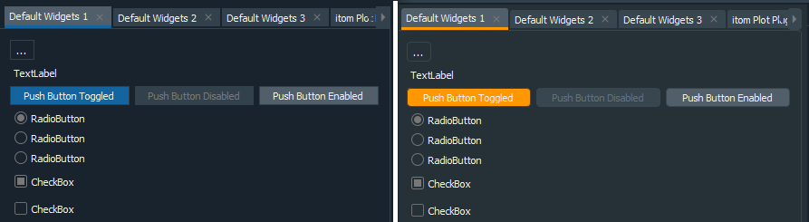
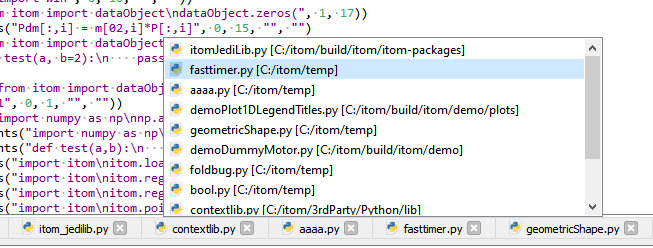

1.1. Changelog Versions 4.x#
1.1.1. Version 4.2.2 (2022-09-02)#
1.1.1.1. itom#
Itom 4.2.2 contains beside some small changes an important bug fix for Windows 7 and 8. SetDpiAwarenessContext is not supported by these Windows versions and therefore launching Itom was not possible.
1.1.1.2. Plugins#
New plugins:
ThorlabsDCServo (actuator)
1.1.2. Version 4.2.1 (2022-08-12)#
Itom 4.2.1 contains a bugfix in the Ximea-Plugin. This bug made it impossible to use the Plugin for many camera models (Mainly from XiC series). In addition, other small fixes were made in the plugins, the designerplugins and in the core.
1.1.3. Version 4.2.0 (2022-07-14)#
1.1.3.1. itom#
(more than 750 commits in itom repository)
New Features
The C++ and Python class
itom.dataObjecthas now two new data typesdatetimeandtimedelta. Both have an accuracy of microseconds. Thedatetimedata type can also have a timezone (for Python >= 3.7 only) as difference to UTC. These data types are compatible to the Python typesdatetime.datetimeanddatetime.timedeltaas well to the corresponding numpy data types. It is also possible to plot a XY-plot (plugin: itom1dqwtplot), whose x-data is adatetimedataObject. The variable detail dialog (double click on corresponding workspace items) can also visualize dataObjects or numpy arrays of these types. (pull request 77)Complete redesigned variable detail dialog for items in the workspace widgets, especially for variables of type dataObject or numpy.ndarray. In this case a table preview is shown for the array, including some basic information, meta information etc. A heatmap can be shown using background colors in the table, values can be exported and it is possible to display 1D or 2D plots from selected ranges, columns or rows in the displayed table. (pull request 71)
Algorithms in algorithm plugins can now not only be called by the method
itom.filter()but also by the wrapper moduleitom.algorithms(). This module is automatically generated at startup of itom and contains all methods that are available in the current instance of itom. Due to auto-generated stub files, complete calltips and auto completions are available in the Python script editor if one starts typing the desired command. This means that a previous call ofitom.filter("findMultiSpots", obj1, arg2,...)is now called byitom.algorithms.findMultiSpots(obj1, arg2, ...).drag&drop of algorithm into script or console will now paste the new
algorithms.myAlgo(...)formalism instead offilter("myAlgo", args).Plugin Help Viewer shows algorithms and widgets in an alphabetic list
The properties
yAxisFlippedandkeepAspectRatioas well as the default color map of plots can now be set as default in the tab Default Style Settings of the itom property editor (pull request 81).Complete rework of the demo script sections in the user documentation. A gallery shows an introduction to several demo scripts. Both the source code and the ouput (including plots…) after run are displayed for each demo script in the user documentation. The scripts are also located in the demo folder of the itom installation (as usual).
added sphinx_copybutton extension to html documentation
QPropertyEditorWidget can now be filtered, sorted and grouped. This feature is enabled in the corresponding dock widget of the plots.
new parameter type
StringListin C-Api of classito::ParamBase, including the meta classito::StringListMeta. This allows passing lists of strings to plugin methods among others. Validators have been added, too.new method
copyStringToClipboard()to copy a string to the clipboardMoved the designer plugin
dataObjectTablefrom the designer plugins repository to the itom core (itomWidgets library). This widget is used in the improved variable detail dialog for dataObjects and numpy.ndarrays. This widget now also supportsrgbaanddatetimevalues. The widget also provides a new export-to-csv feature and a copy-to-clipboard feature, that can both provide a raw-text mime type as well as an html mime type, where the background color of the selected cells is exported, too.Support for the Python plot package plotly is provided (also by a new plotly designer plugin). See also pull request 74.
If a
numpy.ndarrayis converted to aitom.dataObject, the original type and shape of the numpy array is stored in the special tags_orgNpShapeand_orgNpDType. This is for instance used to show the original type in the variable detail dialog of the itom workspace.
Changed Behaviour
Fixes issue 119: The
bool(dataObject)operator has changed its behaviour to be consistent with the behaviour ofnumpy.ndarray.Implements issue 137: comparison operators of ito::RetVal are
constnow.Pull request 66:
createMask()will always returnd a 2D dataObject, whose size correspond to the last two dimension of the source dataObject instead of an object, whose number of dimension is equal to the dimensions of the source object.Updated splash screen of itom (pull request 78)
removed the deprecated method
itom.pointCloud.fromDisparity(). This method is equivalent to the already existing methoditom.pointCloud.fromTopography(). A warning was already set since a long time if the deprecated method has been used.QPropertyEditorWidget: removed deprecated members and added a QPropertyEditorWidgetPrivate class for better future improvements. This is an incompatible change and is therefore part of the AddInInterface version change to 6.0.0.
adapted colormap
grayMarkedto support a more robust visibility of red and violet extreme values, also in case of numerical calculation uncertaintiesdataObject:
getPhysToPix: isInsideImage is set to true if the rounded pixel value, obtained from the given physical value, is inside the bounds of the dataObject.default encoding of rst documentation files is utf-8
Improvements
Totally renewed demo section in the user documentation. All demo scripts are now added to a gallery view including the demo code snippets as well as plot outputs or other results (using the python package Sphinx gallery).
Support for Python 3.10
Pull request 73: changes in PythonEngine such that updates of the workspaces will be delayed for several intermediate steps of minor importance, such that the total amount of time for all the updates will be reduced.
parse_plugin_parameters_for_rst_files.py: sort alphabetically and copy the resulting string to the clipboard
The new plugin instance dialog shows now a Hex-based spin box for char and integer parameters, if their minimum value is >= 0 and their representation is set to HexNumber.
improved parameter representation, including meta information, in help viewer, documentation generation, …
The widget
dataObjectTableemits a signalselectionInformationChangedwith basic math information about the current selection (min, max, mean, std). This is displayed in a label of the variable detail dialog for dataObjects and numpy.ndarrays.better handling of previous and new indentation levels of copied, cut, pasted, drag&dropped texts.
script editor: F12 shortcut for goto assignment is now displayed in context menu
script editor: comments (Ctrl+R) are only added to non-empty lines
adaptions and fixes to support Python 3.10 and flake8 4.0. Still missing: stubs generator should support new | operator as alias for typing.Union
itom.setCurrentPath()accepts both a path to a folder or a file in this folder. In both cases, the folder is used as current directory. ReturnsFalseif the path does not exist or could not be set.script editor: code checker is re-run if a search&replace operation has been finished
faster and more robust parsing of Python variables in the workspace widgets
update of plotInfoMarker to support a checkbox in front of the top level items including the interaction if these checkboxes are checked / unchecked. plotInfoMarker of itom1dqwtplot and itom2dqwtplot: marker group names will now span the entire row
dataObject.dstack()has now keyboard based arguments including the new optional argumentcopyAxisInfo. If True (default: False), axis information of the first given object is copied to the last dimensions of the returned object.Attribute
dataObject.Tadded as synonym todataObject.trans(), to be more compatible to the Numpy syntax.From python 3.7 on, the deprecated method PyParser_SimpleParseString is not used any more to split a multiline command into major blocks. Instead, the AST is directly parsed using Py_CompileStringFlags.
scalar numpy types, like np.int, np.float, np.complex… are now implicitly converted to ParamBase::Int, ::Double, ::Complex if a plugin is called, or to suitable Qt types if any slot or property of a widget is called Pull request 67.
new optional CMake variable
BUILD_QT_DISABLE_DEPRECATED_BEFOREadded for itom, designerplugins and plugins. You can set it to a hex Qt version number. The compiler raises an exception if a method should be used, that was deprecated in an earlier version that the one set in this variable.increase the stack size of the Python thread to 5MB, such that the maximum recursion depth, e.g. for Jedi, can be increased. The maximum recursion limit of Jedi calls is no limited to 1800, independent on other limits. The jedi unittest is extended to also verify a recursive call with a similar recursion depth limit.
Since the stack size of a QThreadPool, e.g. used to call Python jedi, cannot be locally increased for Qt < 5.10, the overall stack size of all threads is set to 4MB for MSVC builts using the Linker flag /STACK (only for Qt < 5.10). Else only the Python and Jedi worker threads get an increased stack size of 5MB. Increase stack size of Jedi worker threads (only for Qt >= 5.10).
fixes and improvements in figure widget (base window for plots): better handling of default plot class for pointCloud and polygonMesh plots. Title is also exposed to the window title for liveImages and pointCloud/polygonMesh plots.
Refactorings and bugfixes
code refactored to remove Qt methods, deprecated before Qt 5.6, to support Qt 5.15 and therefore be prepared for Qt 6.x.
many linux bugfixes to be compatible to the latest versions of Fedora, Kubuntu, Ubuntu and Debian (e.g. removed GCC compiler warnings)
Pull request 85: improved include of Python in C++ to prevent compiler warnings in Visual Studio 2019 or higher
Pull request 84: AddInInterface version altered to
6.0.0due to an incompatible fix / redefinition of the dataObject meta classito::DObjMeta, that can be used to further describe parameters (ito::ParamBase) of type dataObject. Unittests extended for several parameter meta classes.bugfix in inno setup: python38.dll and python3.dll needs to be copied to root directory, such that newer opencv-python packages can be loaded. They require a detectable python3.dll, too.
Code refactored to better support Qt 5.15 or Qt 6.x, to remove compiler warnings with modern compilers… Replaced some string-based signal-slot-connections or signal mappers by lambda functions.
C++ unittest framework gtest updated to version 1.10.0. These unittests have been adapted to work with linux / gcc
itom_unittests can now be executed via the Visual Studio extension “Google Test Adapter”. Its configuration is set via the itom.gta.runsettings file (via CMake configure_file)
matplotlib backend (v3) adapted to also support Matplotlib 3.4 and 3.5.
fixes issue 179: fixes ValueError if right click in matplotlib canvas
added .lang-format style configuration file to allow the clang formatting for source code files
more work to better support high-dpi screens and mixed screen resolutions (pull request 76 among others)
fixes issue 200: error in
dataObject.createMaskif the bounding box of the shape is not fully contained in the area of the given dataObject. This is fixed now by means of the new methoddataObject::getPhysToPixUnclipped.fixes for shapes. shape unittest extended to verify all these fixes. Most fixes are related to rotated shapes and shapes with a “negative” side length (rectangle and ellipse)
bugfix in PythonQtConversion::PyObjGetRepresentation
fixes issue 165 about the correction of the indentation level when pasting a text to a script
Python workspace can now also handle inherited classes, with mixups of __dict__ and __slots__. Keys of nested objects can now have other data types than strings or integers. (pull request 75)
fixes issue 193: the QPropertyModel does not crash any more if the propertyObject is updated with dynamic properties, too.
fixes issue 188: crash if a key of a dict contains a slash (internal delimiter) and is clicked in the workspace widget
fixes another issue: loadIDC will not change any keys of the loaded dict any more. The same holds if an idc is load into the workspace using the “packed” version. However, if the content of the IDC file should be unpacked into the workspace, keys are checked to be valid Python identifiers. If this is not the case, they will be renamed and a list of all changes will be shown as warning message box.
fixes issue 189: the Qt designer, opened within itom, will be closed if itom is closed. If Qt designer is already opened and the user clicks the button again, the first instance is activated and brought to the front.
fixes issue 185 and prevents an error if a docstring is automatically generated for a method within a specific class / function constellation.
fixes issue 181: from Python 3.8 on, Py_CompileStringFlags requires knowledge about the supported Python feature set (which features from which minimum Python version should be used). Else, underscores in numbers will for instance be blocked, since they are only supported from Python 3.6 on.
fixes issue 180: workaround to provide a correct (but not very efficient) implementation for dataObject.rand(…,”int32”). This only affects the
int32datatype both in Python and C++.fixes issue 176: fixes a bug when creating a dataObject from a numpy.ndarray, whose stride can be 0 in specific cases. Additionally, less deep copies are created in this constructor, compared to the previous version.
fixes issue 170: prevent Python error if an expanded dictionary in the workspace is replaced by a dataObject (among others)
fixes issue 164: If PyErr_Occurred() is called, the Python GIL must be hold for Python >= 3.9.
itom.filterHelp()properly displays parameters whose description contains newline characters.several memory leaks fixed.
many more minor bugfixes, also considering Ubuntu, Fedora, Debian…
fixes for PCL >= 1.12.0
bugfix in itom if last screen position is ouf of current set of screens
1.1.3.2. Plugins#
(more than 170 commits in plugin repository)
New plugins:
ThorlabsTCubeTEC (RawIO)
QuantumComposer (RawIO)
ThorlabsKCubeDCServo (actuator)
HBMSpider8 (ADDA)
Bugfixes and improvements:
AvtVimba: added USB camera support.
BasicGenericFilters: GaussianFilter: changed kernel and sigma to optional parameters and added default values.
BasicFilters: remove space in name of parameter, since this is not a valid parameter name.
dataObjectArithmetic: GaussianFit1D filter added to fit a Gaussian curve into a set of x,y coordinates.
dataObjectIO: added documentation.
DataObjectIO: QString::SkipEmptyParts change to Qt::SkipEmptyParts for Qt > 5.14.0.
dispWindow: projWindow class now inherits from QOpenGLWidget instead of the deprecated QGLWidget. This fixes issue #15.
DummyGrabber: exemplary parameter “demoEnumStringList” with a StringListMeta added. This parameter is only a demo parameter and has no use.
DummyGrabber: deleted unused variable.
DummyMotor: updated documentation.
FileGrabber: = operand change to setPath().
FittingFilters: removed ambiguity of uint64 datatype.
GenICam: fix for Optronis CoaxPress cameras together with Euresys framegrabber.
GenICam: further improvements if many plugins are running in parallel.
GenICam: fix in copy RGB8/BGR8 buffer to dataObject row-wise.
GenICam: add colorMode for color PixelFormats.
GenICam: added supported of RGB8 pixelFormat.
GenICam plugin can now automatically detect GenICam 3.3 libraries (2021.02).
GenICam: add toStrongRef() to QWeakPointer.
GenICam: cleanup, changed BGR10p, BGR12p pixelformat check RetVal from Error to Warning.
GenICam: Adapted to BGR8 color; BGR10p, BGR12p included, but no color atm. Tested with Jai AP1600T-USB. Known issue “PulseGeneratorFrequencyConverter2_ConvertFrom” throws infinity warning while Cam Data readout.
Genicam: fixes correct initialization of String init parameter.
glDisplay: uses now QOpenGLWidget instead of the deprecated QGLWidget. This fixes also a problem with a wrong position at startup.
IDSuEye: update IDSuEye SDK to 4.95.
Newport2936: bugfix setting channel parameter.
OpenCVFilters: added “rgba32” datatype to cvBlur, cvMedianBlur, cvRot180, cvRotM90, cvRotP90, cvFlipLeftRight, cvFlipUpDown.
OpenCVFilters: added try, catch and some more changes in plugin.
OpenCVFilters: added warpAffine filter.
OpenCVFilters: added protocol to getRotationMatrix2D.
OpenCVFilters: added getRotationMatrix2D.
OphirPowermeter: timeout parameter deleted read-only flag.
OphirPowermeter: QElapsedTimer is now started in readString.
OphirPowermeter: bug fix with missing timer start.
OphirPowermeter: bug fix while closing the instance.
OphirPowermeter: bug fix while initializing several devices.
OphirPowermeter: Qtime changed to QElapsedTimer.
OphirPowermeter: bug fixed in init of plugin when have multiple devices connected.
PclTools: adaptations for VTK 9 ´https://vtk.org/doc/nightly/html/md__builds_gitlab-kitware-sciviz-ci_Documentation_Doxygen_ModuleMigration.html https://discourse.vtk.org/t/how-to-handle-cmake-components-name-change-between-8-2-and-9/5338/7´.
PclTools: bugfix if an invalid point cloud is passed.
PclTools: added pclSurfaceByMarchingCubes algorithm to reconstruct a polygon mesh from a pointCloud.
PIGCS2: added reference move for C-663 controllers.
PIHexapodCtrl: QTime changed to QElapsedTimer. QString::sprintf change to QString::asprintf.
RawImport: QProcess::start use of overloaded function.
RawImport: bugfix converting file with whitespace in name.
SerialIO: Qtime change to QElapsedTimer.
ST8SMC4USB: added command_homezero into plugin calib function.
ST8SMC4USB: changed constructor, destructor to protected.
ST8SMC4USB: better status, position updates in calib function.
ST8SMC4USB: added homezero calibration run in seperate thread because its a long command.
ST8SMC4USB: update XILib to 2.13.1.
ThorlabsISM: update parameter in documentation.
ThorlabsISM: when moving relative the wrap on 360° was removed.
ThorlabsISM: can now also connect to Kinesis Simulator software; if multiple devices are connected, the first device of supported type is loaded if no serial number is given.
ThorlabsKCubeDCServo: Qtime changed to QElapsedTimer.
ThorlabsKCubeIM: movement interrupt resets axes by retval.errorcde == -1.
ThorlabsKCubeIM: implemented interrupt while moving multiple axes.
ThorlabsKCubeIM: implemente KIM_RelativeMove and setInterrupt trigger KIM_MoveStop to stop the axis.
Ximea: added lensAvialable to plugin documentation.
Ximea: added lens flag to optional parameters.
Ximea: Removed support for SDK < 4.10 from source.
further bugfixes and smaller improvements.
minor param meta information adaptions in several plugins.
added Sphinx math syntax to render equation using latex.
some Qt6 adaptions.
1.1.3.3. Designer Plugins#
(more than 115 commits in plugin repository)
vtk3dVisualizer
Pull request 14: for VTK < 8.2 this plugin is still based on the legacy Qt class QVTKWidget. For other versions, the new QVTKOpenGLNativeWidget class is used as base class. The legacy class can also be used if the CMAKE variable VTK3DVISUALIZER_FORCE_LEGACY_VTK is set.
bugfixes in geometry item: some properties can only be adjusted in the range [0,1]. The opacity is set to [0,100] in order to have the same range than for point clouds and meshes.
prevent crash if an empty mesh should be displayed
title property added, order of icons in toolbar improved
It is not allowed to add an item in another base group (meshes, clouds, geometries) that has the same name than another existing item in another group.
plotly
Pull request 15: Added the new designer plugin plotly as a backend for the Python package Plotly. There are demo scripts in the itom core repository that show the usage of this plugin.
twipoglfigure
Pull request 17: The 3D plot plugin “twipoglfigure” is integrated in the official designer plugin repository as a fork from https://bitbucket.org/twipOS/itomplugins (origin by twip optical solutions GmbH). This plugin was slightly modified to better fit to other itom designer plugins.
itom2dqwtplot
color of point and multipoint shapes is now equal to the line color of all other shapes, and not equal to the drag&drop indicators.
better synchronization between grid style property and its corresponding menu and actions.
menu for all toolboxes available in menu view
redesign of markerInfoWidget. The widget is now directly included in itomQwtPlotBase, and consists of a view and model. It can be extended by a toolbar.
marker groups in marker widget have now a checkbox, such that all markers of a group can be hidden or shown. This is also possible by the new slot “showMarkers” and “hideMarkers”
minor fix in ItomColorMap::colorTable256()
bugfix for 1xN or Nx1 dataObjects, plotted with an 2d plot. Fixes bugs for the value picker and for the rendering outside of the boundaries of the dataObject.
improved position for optional labels of geometric shapes of types circle or ellipse
horizontal zoom with mouse wheel fixed
Issue 31: slot ‘setLinePlot’ of itom2dqwtplot also plots a line plot, if a camera has recently be assigned to this 2d plot. However, the latest displayed object of the plot must be bigger than the extent of the new line cut, else the line cut will be reduced to the size of the latest data object.
fixes to prevent plotting dateTime or timeDelta dataObjects
bug fix while copy complex dataObject from 2dPlot via right click
zoom direction with Ctrl + mouse wheel is inverted, such that two finger mouse gestures on the mousepad have the intuitive direction.
bugfix in color map base classes of itom1dqwtplot and itom2dqwtplot, when using logarithmic scales. This fix came also when moving to Qwt 6.2.
Fixes the issue 186 concerning the “send-current-view-to-workspace” method with an inverted y-axis. Since the minValue is bigger than the maxValue of the yAxisInterval in this case, this interval has to be normalized before getting the current zoom rectangle.
itom1dqwtplot
improved number representation of the value picker and the coordinates in the toolbar. Numbers < 100000 will be displayed with three decimal digits, other values will be displayed using the +-9.99E100 representation. This fixes issue issue 36.
XY-plot: fixes a bug if the x-obj is a floating point object with partial NaN values and the y-obj is an integer object. Before, the NaN value was plotted as point in the top-left-corner of the plot.
color of point and multipoint shapes is now equal to the line color of all other shapes, and not equal to the drag&drop indicators.
better synchronization between grid style property and its corresponding menu and actions.
menu for all toolboxes available in menu view
redesign of markerInfoWidget. The widget is now directly included in itomQwtPlotBase, and consists of a view and model. It can be extended by a toolbar.
marker groups in marker widget have now a checkbox, such that all markers of a group can be hidden or shown. This is also possible by the new slot “showMarkers” and “hideMarkers”
minor fix in ItomColorMap::colorTable256()
improved position for optional labels of geometric shapes of types circle or ellipse
horizontal zoom with mouse wheel fixed
Pull request 16: This plot now supports plotting XY-plots, whose x-values is a
datetimedata type.zoom direction with Ctrl + mouse wheel is inverted, such that two finger mouse gestures on the mousepad have the intuitive direction.
X/Y plot, move to previous or next picker position tries to consider the current index position (important, if multiple points have exactly the same position)
properties
axisLabelRotationandaxisLabelAlignmentadded to optionally rotate and / or align the labels of the horizontal x-axis.bugfix in color map base classes of itom1dqwtplot and itom2dqwtplot, when using logarithmic scales. This fix came also when moving to Qwt 6.2.
matplotlib
subfig configuration widget is destroyed after use, refactoring the code to more modern code (nullptr, …)
bugfix if a negative position value is passed to addUserDefinedAction
more fixes for QWheelEvent::angleDelta instead of delta
motorController
bugfix when getting numaxis parameter from any actuator plugin
General
replaced deprecated Qt methods, that have been deprecated before Qt 5.6.
the plugins dObjMetaDataTable and dataObjectTable is moved into the core code of itom (itomWidgets* library)
Qwt altered to version 6.2.
Some modifications to support Qt 5.15, as preparation for upcoming Qt 6.x versions.
1.1.4. Version 4.1.0 (2021-03-05)#
1.1.4.1. itom#
(more than 410 commits in itom repository)
New or changed major features:
Complete rework of the themes darkStyle and darkOrangeStyle and their corresponding versions with rounded corners (darkStyleRounded and darkOrangeStyleRounded). Per default, the button set is now automatically chosen based on the gray-level of the background color of the selected style. There is a new demo script demo/ui/stylesheetEditor/stylesheetEditor.py, that can be used to implement your own style. The stylesheets are now adapted to work with all special widgets and plots of itom:
The Qt tool rcc.exe is now shipped with future setups to allow user-defined compilations of resource files, e.g. for custom style sheets with custom icons. Custom resource files can now be loaded at runtime via the the command
itom.registerResource()and unloaded viaitom.unregisterResource(). For more information, see the demo scripts in demo/ui/gui_icons_images.Pull request 59: A mouse-over tooltip with information about the word under the cursor in a script editor is shown. The content is rendered by the Python package Jedi

Pull request 62: Based on the current foldings of a script, a detailed outline structure is created in the background. The navigation combo boxes on top of the script are updated based on this outline and the method / class of the current cursor position is always pre-selected. Furthermore, a fast navigation with the current script or over all scripts is possible via a new outline popup. This popup is accessible by the an icon in the toolbar as well as by the Ctrl+D shortcut. Remove the @-sign in the search box to find methods and classes in all opened scripts:

Pull request 64: A new docstring generator was added to the script editor. It produces an pre-configured method or function docstring below the signature of a method. You can select in the property dialog of itom, if the docstring should follow the numpy or google docstring style. Insert the docstring either by the shortcut Ctrl+Alt+D or by the (context) menu of the script editor. Alternatively, start typing three apostrophes or double quotes right after the end of the signature. Then, a popup appears. Press enter to execute the docstring generation.

Ctrl+Tab in a script editor opens now the new tab switcher popup, where another script can be selected from a list. The most recently used tab is always on top of the list.
Pull request 61: An automatic Python code formatter has been added to the script editor. This is mainly a button in the toolbar or an action in the edit or context menu. If this button is pressed, a customizable Python module is called and the current script is passed to this module. The module then formats the code, e.g. following the rules of Python PEP8 and returns the formatted code. Using the undo button (Ctrl+Z), this operation can be undone. itom comes pre-configured to work with the module black. However, call commands for yapf and autopep8 can also be selected in the property dialog of itom. Furthermore, it is possible to define custom commands for other code formatter modules.
Pull request 45: Layouts of custom user interface can also be configured and its containing widgets can be added or removed via Python at runtime. To do this, layouts, derived from QLayout, can also be addressed via its
objectNameand are referenced as instances of the classuiItem. Many methods of these layouts can be called via the knownuiItem.call()method. Many public methods of these classes are also made accessible. For a complete list, see also Special (wrapped) slots. Examples can also be found in the demo scripts folder demo/ui/dynamicLayouts. The user documentation about custom user interfaces has been extended and improved (see Creating customized dialogs, windows and dock widgets).Pull request 51: Calls to the Python Jedi library for auto completion, calltips, help tooltips etc. are now handled by a background thread, that tries to get the Python interpreter lock (GIL). This allows getting help information via Jedi while another Python script is running. itom supports Jedi >= 0.16 and up to 0.18.
If a breakpoint is considered to be in an empty or comment line, an error text is printed at startup of a debug session and the breakpoint is deleted.
itom.dataObjectcan now be compared to other complex64 or complex128 dataObjects or scalar values.
{kind=link}
{kind=link}
Further changes:
Complete check, correction and re-formatting of all docstrings in the
itommodule. All these docstrings following the rules of numpydoc.Pull request 55: Whenever itom is newly started or recompiled, a pyi stubs file is generated for all methods in the
itommodule. This allows showing the docstrings during auto completion, calltips and tooltips.Improved user management: A user can only create users with the same or less rights than himself, e.g. a developer cannot create an administrator, but another developer or user. The same holds for specific rights of the user and for deleting a user. The default user can now also have a password.
New methods in the class ItomUi of the module itomUi, usually used as base class for custom user interfaces in itom / Python. The new methods are factory functions for
withstatements:ItomUi.disableGui(), used to temporarily disable, hide, show or enable widgets during a long operation, andItomUi.blockSignals(), used to temporarily block all signals from one or multiple widgets. For more information, see also the demo script demo/ui/itomUiClassDemo.py.Pull request 43: Set the CMake variable ITOM_ADDITIONAL_EDITION_NAME to an arbitrary string, to define a certain edition of itom. This edition text is also shown in the splash screen, as well as in the about >> info dialog.
If comments are added via Ctrl+R in a script editor, a space is inserted after the # character. This considers the PEP8 style guide of Python.
New Python methods
uiItem.getClassName()to receive the Qt class name of the corresponding widget, anduiItem.getLayout()to get a reference to the layout, associated with the current container widget (if it is one).speed improvement when accessing
itom.uiItemobjects (attributes __slots__ and __dict__ are now filtered out before asking Qt for sub widgets)The ask before close dialog, displayed if itom should be closed, can now be disabled by a checkbox at the bottom of this dialog. This setting can always be reverted via the itom property dialog. This option is only displayed, if the current user has the necessary rights.
More public methods of QTableWidget wrapped to Python:
setCurrentCell,visualRow,visualColumn,sortItems.Issue 138: If a signal is connected to a Python callback method (e.g. via
dataIO.connect(),actuator.connect()oritomUi.connect(), a reference to unbound callback methods is kept. If the callback method is bound to a class, only a weak reference is kept to avoid cyclic garbage collections of the class instances.Pull request 56:
DataIOandactuatorplugins now have a user mutex, that can be accessed both by the C++ interface as well as by the Python methods py:meth:dataIO.userMutexTryLock, py:meth:dataIO.userMutexUnlock, py:meth:actuator.userMutexTryLock, py:meth:actuator.userMutexUnlock. Plugins must be compiled against the AddInInterface >= 4.2.0 to support this mutex.added new editorTheme
VSDarkStyle.inito styles/editorThemes which looks like Visual Studio.ParamEditorWidget can now display the slider widget as editor for floating point values using a popup slider. This feature can be enabled or disabled via the new property
popupSlider. TheAddInInterfaceversion was therefore altered to 4.1.0.Pull request 48: The attribute
metaDictis now also settable and can be set to a dictionary with several optional and mandatory meta values for this dataObject.Pull request 54: Implementation of the matmul (@) operator for the class
itom.dataObject. This is the preferred way for a matrix multiplication of two dataObjects. This is only available from Python 3.5 on. This fixes the issue #142.Improvements in fold detection, e.g. concerning multiline comments etc.
itom plugin C-API: Api Function apiFilterCallExt added to call functions with progress observer from other plugins.
If a Python method or function is run, the python state changed is published with a certain delay, such that very fast executions (< 100ms) will not propagate the begin/end state change to increase speed and avoid GUI flickering.
code editor feature: strip trailing whitespaces and tabs in the current line after pressed return or enter. This feature can be disabled in the properties (editor >> General). However, they are recommended to follow the Python PEP8 style guide advises.
The constructor of
itom.timerhas a new optional argumentstartAfterInit(default:True). If set, the timer is automatically started.py:class:
itom.timer, py:meth:itom.addMenuand py:meth:itom.addButtonaccept now lambda and partialfunc callback functions. Redesign of the timer manager dialog (class DialogTimerManager) to avoid race conditions if the timers are deleted or changed by Python while the dialog is opened. While the dialog is opened, all timers are continuously monitored to updated their activity state and timerID.connect/disconnect methods added to
itom.progressObserver, such that one can bind toprogressTextChanged,progressValueChanged,cancellationRequestedorresetDonesignals. Demo script added (demo/ui/observedParallelFunctions.py).info()added to show possible signals, one can connect to (usingconnect()).some signals added to class
FunctionCancellationAndObserver(cancellationRequestedandresetDone)Reduced default font size of plot labels from 12 to 10 and font from Helvetica to Verdana.
Script editor: insert codec feature improved, such that it can be reverted by the undo button.
The minimum requirements to compile and use itom are now: Qt >= 5.5, Python >= 3.5 and a C++ compiler, that supports the C++11 standard. Code switches for older versions of Qt and Python have been removed in the C++ code.
Bugfixes:
Pull request 42: Bugfix in option run selection of the script editor.
Pull request 46: fixes and enhancement of
pythonProgressObserver. The methodsprogressTextandresetare now also accessible via Python.Issue 126: improved python syntax highlighting: numbers with underscores are correctly parsed as well as the new @ operator for element-wise multiplication.
Issue 129: dataIO plugins, that don’t have a defined subtype (Grabber, RawIO, ADDA), will not be loaded any more and an error is added to the loaded plugins dialog.
Issue 130: The itom matplotlib backend is now compatible with Matplotlib <= 3.3.0.
Issue 133: Drag&drop of filter into console leads to wrong texts in German version.
Issue 135: correct typeset of example strings in helpTreeDockWidget.
Issue 139: itom is now compatible with PCL 1.10 and 1.11.
Issue 143: CRC errors in some PNG icon files.
Issue 154: The implicit conversion of a non-continuous dataObject to a numpy array is working again, without the need to convert the dataObject to a continuous one before. This conversion is done again in the background. This fix is necessary due to a minor implementation change from Numpy 1.18 on.
bugfix in mapping set of itom.dataObject for scalar assignment (bug occured in GCC 6)
Issue 157: clean GIT URL in version information (without username from https synchronization)
improvements in some widgets of itomWidgets library (statusLed and rangeSlider), especially to support better styling, e.g. with the dark theme of itom
bugfixes and improvements in color palette editor of property dialog of itom: the colors can now also be chosen via a color picker, the dark theme is improved and the position spin box has a better range handling.
itomSyntaxCheck.py: disable more logger warnings from flake8 (e.g. due to deprecated methods between mccabe and flake8)
bugfix when drawing a vertical line at a certain column position in the script editor.
bugfix in pip manager: if installing a package failed, it might be that temporary folders, starting with tilde, are still available in the site-packages directory. Ignore these directories during pip show …
If an actuator is closed (either by GUI or Python), its interrupt flag is raised. This would stop a possible movement as fast as possible (if implemented). The motor axis controller will not display any errors or warnings any more if an actuator is about to be deleted.
macro REMOVE_PLUGININSTANCE in addInInterface modified: if a plugin object should be deleted, it is now deleted by deleteLater() instead of a hard object deletion. This is necessary if for instance the dock widget of the plugin is still handling pending events. Else a crash is likely to occur.
MotorAxisController widget: added three properties to set the background color of input fields of axes, depending on their current state. This can be used to color axes, that are currently moved, that have been interrupted or run into a timeout. Adapted the dark styles to properly set these property depending on their color scheme.
itomWidgets: more widgets adapted to the current state of their mother project
ctk widgetsdefine the error code “E902” (TokenError: EOF in multi-line statement) as a real syntax error.
Maximum recursion limit of calls to Jedi (via itomJediLib.py) is set to 1100 to avoid uncatchable stack overflow exceptions.
Issue 147: Pip Manager calls pip via runPipUtf8.py module to force the stdcout and stderr stream to UTF-8 (under Windows). If this fails, pip is directly called in a process as fallback solution. The fix prevents Python to raise a
UnicodeEncodeErrorif any package contains special characters in its meta information.fixes a bug where the active line background in the console is enabled after an input command, even if the active line background is deactivated in the itom properties.
Bugfix with
save allfunction of scripts. If a modified script was saved, that was not the current script, the window title and internal current tab index was wrongly set afterwards.Python Package Manager works again for older Pip version < 0.18.
If an undo / redo operation is executed within a script, all current breakpoints and bookmarks are preserved. This is done by calculating a diff between the previous and new version of the text.
Further minor bugfixes
1.1.4.2. Plugins#
(141 commits in plugins repository)
AvantesAvaSpec: support for USB3 devices added (tested with AvaSpec-ULS2048CL-EVO). Documentation improved.
New plugin OphirPowermeter to support powermeters from the company Ophir. It is either possible to directly connect to powermeters via RS232 (using the serialIO plugin as communication layer) or via USB. For the latter, the Ophir COM object, e.g. delivered with the StarLab software, has to be installed on the target computer.
New plugin ThorlabsKCubeIM added to control Thorlabs K-Cube Controller for inertia stages and actuators.
New plugin ThorlabsFF to support filter flippers from Thorlabs.
The plugin PI_GCS2 now supports the C663 controllers from Physik Instrumente (PI).
Bugfix in plugin Ximea for external triggers.
The plugin PclTools can now be compiled with PCL 1.10 and 1.11.
SerialIO: The user can now define, if $(Ascii-Code) commands in the toolbox should be parsed or transmitted as it is.
The DummyGrabber plugin can now also show simulated Gaussian spot images.
Some debug output improvements in the plguin GenICam. FLIR cameras (e.g. AX5) are now supported.
Added the filter cvThreshold to the OpenCVFilters as wrapper for the OpenCV function cv::threshold.
CMake detection of GenICam 3.2 in the GenICam plugin.
bugfix in FittingFilters, filter fillInvalidAreas to properly detect NaN values.
further bugfixes and smaller improvements
1.1.4.3. Designer Plugins#
(more than 10 commits in designerPlugins repository)
itom1dqwtplot, itom2dqwtplot: Bugfixes, improvements and refactoring when creating shapes, especially polygons. This also holds for interactive shape selections, e.g. using the methods
plotItem.pickPoints()orplotItem.drawAndPickElements().itom1dqwtplot, itom2dqwtplot: When a camera is connected to the plot, a camera property toolbox is available and can be displayed via the toolbar of the plot. In this toolbox, all generic parameters of the connected camera can be changed. For number parameters with a defined minimum and maximum value, a popup slider is now displayed if the current parameter is clicked for a better usability.
vtk3dvisualizer: compatibility for PCL 1.10 and 1.11 added
1.1.5. Version 4.0.0 (2020-05-28)#
1.1.5.1. itom#
(more than 300 commits in itom repository)
New or changed major features:
ScriptEditor can now handle filenames with special characters
New alternative interface for algorithms (ito::FilterDefExt) in algorithm plugins. This allows both continuously reporting the progress of an algorithm to Python (class py:class:
itom.progressObserver) or C++ GUIs as well as interrupting a long running algorithm from these GUIs, too.The keyword ‘_observer’ is not allowed in any algorithm plugin filters, since it is a reserved keyword for passing an progress observer to a filter. Filters having such a keyword will be rejected by itom.
Forward and backward navigation buttons in script editors are available. Their behaviour is similar than in Visual Studio (see https://blogs.msdn.microsoft.com/zainnab/2010/03/01/navigate-backward-and-navigate-forward/)
Improved callstack toolbox: The internal traceback of the debugger is ignored, now. It is possible to double click every level of the callstack in order to jump to these lines. The top level will be marked with a yellow arrow in the script, other affected lines by a green arrow.
Added an alternative, optional code checked based on the Python package flake8. This enhances the functionality of pyflakes and displays more information in the first margin of the script editors. The code checker can be heavily configured by the property dialog of itom.
Bookmarks in all script are now managed by one bookmark model. A toolbox for all recent bookmarks is now available. The bookmark forward and backward buttons will now navigate over all bookmarks in all scripts (Issue 112).
Press F12 if the cursor is within a word in a script to trigger the “Goto definition” action for the word under the cursor.
The user can now select the keyboard modifiers that are used to start a “goto definition” operation in a script upon moving the mouse cursor over a word in the “goto assignment” property page. Default: Ctrl+Shift.
Shortcuts to open an existing or new script, as well as shortcuts to debug any script are now globally available (see Issue 115).
The standard user can now also have a password (see Issue 88).
More members of
itom.dataObjectnow also accept keyword-based argumentsitom.ui: new window type ui.TYPECENTRALWIDGET added. Use this type to permanently include this widget or QMainWindow to the central area of itom, on top of the command line (see Creating customized dialogs, windows and dock widgets).Drop of Qt4 support in itom and its plugins.
More robust compatibility check (by means of Semantic versioning) when loading designer plugins, to avoid crashes if incompatible plugins are loaded (this requires modifications in designer plugins).
New interface
stop()as well as ito::DataIO::stop() to allow stopping continuous acquisition or write operations for ADDA (I/O) devices.Refactoring of all CMake files to follow the new CMake style guide rules of itom (see CMake Style Guide). The CMake files for the itom SDK are now in a cmake subfolder. Macros in ItomBuildMacros.cmake are now renamed and start all with the prefix itom. The minimum CMake version is now 3.1. Many unused preprocessors, useless things etc. removed from CMake files.
CMake: Plugins will now try to automatically detect the ITOM SDK in some standard directories and read some 3rd party libraries from the CMakeCache.txt file of itom (if possible).
uiItem.getChild()(widgetName) added as alternative for uiItem.<widgetName>, since the first method can also be used if the widgetName is a variable of type str.Widget wrapper ‘setItemText’ for QListWidget added. gui.listWidget.call(“setItemText”, 0, “new text”) changes the text of the first item in the given list widget.
The script reference window (help viewer) of itom is now renamed to “plugin help viewer” and only shows information about plugins. The former script reference, based on offline database, hosted at sourceforge.net/p/itom, has been removed since the live script reference (using the python package jedi) fully replaces this technique. OpenSSL is no more needed now.
Modifications of the license information of itom, add of the new licenses folder in the itom sources with all major 3rd party projects that are used in the core as well as commonly used plugins/designer plugins of itom.
Python help output can now also be opened in external editor. This can be configured in the itom property dialog, page Python >> General
Some more demo scripts added (e.g. face detection via OpenCV, settings the color of shapes, starting the roughness evaluator, or cancelling long running algorithms including showing their progress in own GUIs
Improved icon browser dialog: icons can be filtered by a text box. The load is put into a concurrent run task to improve the startup. name of selected item is displayed in textbox below the tree widget.
itom.pluginLoaded()now only allows the name of a plugin, not the filename of a plugin library.Some fixes in python auto indent to provide a better indentation after line breaks based on the pep8 indentation rules
Selection from auto completion list is only confirmed with the Return key in a script. In the console, only the Tab-Key is feasible.
New property page for actuators: It can be chosen if an interrupt flag should be send to all active actuator instances if a python script execution is interrupted (default: false). Calling itom.setPosAbs, itom.setPosRel, itom.calib or itom.setOrigin will now reset the interrupt flag before execution (as well as calling these methods from the motorAxisController.
Macro ‘itom_fetch_git_commit_hash’ added to ItomBuildMacros.cmake to get the current Git commit hash and store it in a gitVersion.h file in the file gitVersion.h in the project’s output folder (can be changed). This behaviour can be toggled by the BUILD_GIT_TAG flag in CMake. This can only be done if the Git package can be found by CMake.
Script editor tabs: it is now possible to configure how long filenames are shortened if there are many scripts opened (see itom property dialog >> editor >> script editors)
File system dock widget: list of recent folders, loaded at startup from settings, will only contain pathes that exist at startup.
Grabber plugins can now have an optional sizez parameter and must then return a 3D dataObject (image stack) with shape (sizez, sizey, sizex)
Added the new default editor style DefaultConsolas.ini, that is based on the default style, but uses the consolas font for all style types.
The type ItomPlotHandle can now be set to None in Python. This allows removing assigned plot widgets for line cuts, z-stack cuts etc. and remove this connection between two plots.
The python package breathe, required to build the user documentation, is no longer shipped together with the itom sources, but must be installed as official Python package (for easier updates)
Python package manager of itom can now also install packages from a requirements.txt file.
Bugfixes:
Issue 87: multiple files can now be opened by droping on script editor
Issue 89: Removed a wrong “container=1” line in the ui-files for itom designer plugins. This line will let the QtDesigner crash if another widget is drag&dropped over a widget of the affected designer plugin class.
Issue 94: method navigation combobox above script editor did not show methods with some typehints.
Issue 95: correctly highlight private methods in scripts, that have numbers in their method name.
Issue 96: bookmark icons are directly removed if ‘clear all bookmarks’ is clicked
Issue 97: removed uint32 from docstrings in itom.dataObject (since not supported)
Issue 98: camera can be disconnected from plot by assigning None to the camera property
Issue 100: Bugfix when obtaining the variable name from a selected sub-item in the workspace tree.
Issue 104: corrected ascending or descending sorting of elements in the workspaceWidget if values in variable name column are numbers, represented as texts. Therefore “10” should follow “2” instead of the text-based comparison.
Issue 106: drag&drop from/to command line: - it is not allowed to drop something in protected lines of the command line - dragging from protected lines of the command line must always be a copy operation
Issue 109: Commands, added to the recent list of commands, are only considered as duplicates if their command string is equal to any older command in a case-sensitive way.
Issue 110: bugfix in scope decoration of code editor.
Issue 113: Current selection of script removed upon a mouse right click in script.
Issue 114: SystemError when converting an empty np.ndarray to an itom.dataObject (python unittest added to reproduce this error)
Issue 120: bugfix in shape.createPoint, unittest added to verify this bug.
Issue 121: The dialog, displaying the content of a variable in the workspace, will now be displayed as non-modal dialog on top of the workspace widget.
Matplotlib backend: fixes several bugs in matplotlib backen (e.g. due to deprecated arguments in matplotlib 3.x)
Redo button in script editor is now working properly
Workaround in font selection of WidgetPropEditorStyles
Bugfix: memory leak for copy constructor itom.dataObject(cpy: np.ndarray)
Bugfix in itomWidgets: ledStatus reported wrong header file, which made it hard to insert it into an ui file
Reference counter of ito::ByteArray is now incremented or decremented atomically. This improves the usage of a ByteArray within different threads.
AddInManager: fix when closing plugin instances, opened via GUI, in destructor of AddInManager: instances should only be directly closed by AddInManager if they are not only referenced any more by any other plugin instance(s). In this case closing the owning instance will also close the referenced instance.
Script editor: class and method navigation combobox can now handle multiline method signatures
Script editor: Bugfix in cut() method if cutting without active selection or if the last line of the selection was an empty line
Fixes and improvements due to deepcode.ai analysis
Bugfix in pythonWorkspace when parsing a class that has a __slots__ attribute. __slots__ can return either a list or tuple.
Bugfix in uiOrganizer (QMetaType 43 exception due to exception of invoked method) in several methods if ui window or dialog have already been deleted before.
Bugfix in node base structure of plots: input parameter ‘dataObject’ was wrongly added as output parameter to AbstractDObjPCLFigure
Bugfixes and code refinement of UserOrganizer, UserModel If the startup argument name=<userID> is passed, this user is loaded without further dialog (only if password is required). New startup argument run=<path_to_script> is added (can be stacked) to indicate scripts that should be executed at startup
Fixes and improvements of code editor, especially if tabs are used instead of spaces
Many linux bugfixes, especially for a better compilation on a Raspberry
Many other bugfixes
Others:
Long error messages (sent to std::cerr) are now split into several lines based on word-boundaries
Python syntax highlighting: added ‘async’ and ‘await’ as further keywords
Documentation improved in many pages, added the section ‘Contributing’ with infos about a CMake style guide and information about translations.
more unittests added
many smaller improvements when using auto completion, calltips etc. from the python package jedi. Adaptions to support jedi 0.15, 0.16 and 0.17.
templates for plugins adapted to the current state of the art
replace unknown NULL macro by nullptr if the compiler is configured to C++11 e.g. via CMake: set(CMAKE_CXX_STANDARD 11) set(CMAKE_CXX_STANDARD_REQUIRED ON)
Internal changes and improvements:
Official name of python class itom.pythonStream renamed to ‘itom.pythonStream’ (was pythonStream.PythonStream before)
initAddIn in addInManager is now able to properly catch exceptions from constructors of plugins. initAddIn of actuators and dataIO merged into one common templated method.
plotLegends is not used any more (since a long time) because it is integrated in itomWidgets. Therefore plotLegends is removed and also deleted from the SDK folder.
Major refactoring of itomCommonPlotLib library: classes Channel, AbstractNode, AbstractFigure refactored and commented, parameter propagation through node tree improved, private classes added to enable easier updates with kept binary compatibility. These changes require adaptions in figure classes / plugins.
Improved error message, containing all allowed enumeration values and keys, if one tries to set an enumeration or flag-based property (e.g. of a plot or another widget)
1.1.5.2. Plugins#
(136 commits in plugins repository)
- all plugins:
adaptations for OpenCV 4
CMakeLists.txtand\*.cmakefiles adapted to (new) cmake style guide of itom (see documentation/12_contributing/cmake_style_guide.rst). General settings of itom libraries as well as plugin and designer plugin libraries are now added in the INIT_ITOM_LIBRARY() macro of ItomBuildMacros.cmake. Include ItomBuildMacros.cmake at the beginning of the file and call INIT_ITOM_LIBRARY, such that also CMake policies are globally set. ITOM_SDK_DIR is now “auto”-detected in the overall CMakeLists.txt file.adapted to new CMake macros / structure of itom SDK
Qt4 support removed
new plugins: NerianSceneScanPro
DummyMotor: status is updated after movement has been interrupted. Interrupt flag is always reset before a movement is started.
GenICam: build script prepared for GenICam 3.1
MSMediaFoundation: CPU load decreased during acquisition (> 50%) + minor bugfixes
MSMediaFoundation: plugin refactored: static instances are mostly replaced by shared pointers to avoid for instance a crash when closing itom (fixes issue #7)
NIDAQmx: implement stop() method of ito::AddInDataIO to stop a running task
NIDAQmx: single value acquisition and write (software trigger only) is now possible. Added a demo for this.
NerianSceneScanPro: removed parameter integrationTime… instead use manualExposureTime
NiDAQmx: analog and digital input tasks now work in finite and continuous mode
OpenCVFilters: added bilateralFilter for input image of type uint8, float32 because this filter is only implemented for those two types in OpenCV (4.1.2)
OpenCVGrabber: avoid OpenCV warnung: “[ WARN:0] terminating async callback”
PGRFlyCapture: added strobe_mode
Roughness: Corrected Zsk and Zku parameters and changed Zv to be positive.
SerialIO: add serialIO Sync Mutex
Ximea: inserted aperture value as parameter
Ximea: ready for hyperspectral sensors
another time a deepcode.ai analysis
demoAlgorithms: Extension of the demoAlgorithms with respect to the algorithmInterrupt branch of the itom sources: Added a long-running algorithm (10sec) ‘demoCancellationFunction’, that can be interrupted by a python scipt cancellation. Additionally, you can obtain progress and cancel this function via a GUI. See the widget example ‘demoCancellationFunctionWidget’ for this
more work on niDAQmx: digital output tasks are now also running in finite and continuous mode
niDAQmx: complete set of demo files for digital and analog input and output tasks (finite, continuous and single value)
niDAQmx: rework of NIDAQMX plugin, mainly done by D. Nessett. See: https://bitbucket.org/dnessett/plugins
niDAQmx: start trigger added
niDAQmx: startDevice / stopDevice are now required for data acquisition or data output (similar to cameras). First steps towards continuous task. Finite analog / digital input are working.
niDAQmx: working analog and digital, input and output, finite and continuous tasks; toolbox dock widget added; tdms logging for input tasks possible
work on analog output tasks for niDAQmx
1.1.5.3. Designer Plugins#
(more than 58 commits in designerPlugins repository)
general:
CMakeLists.txtand\*.cmakefiles adapted to (new) cmake style guide of itom (see documentation/12_contributing/cmake_style_guide.rst). General settings of itom libraries as well as plugin and designer plugin libraries are now added in the INIT_ITOM_LIBRARY() macro of ItomBuildMacros.cmake. Include ItomBuildMacros.cmake at the beginning of the file and call INIT_ITOM_LIBRARY, such that also CMake policies are globally set. ITOM_SDK_DIR is now “auto”-detected in the overall CMakeLists.txt file.general: Remove Qt4 support and compiler switches within CMake scripts and source code
general: Merged in algorithmInterrupt (pull request #8)
general: plugin version numbers of plot designer plugins incremented
general: adaptions of plot designer plugins with respect to modified base classes AbstractNode, AbstractFigure and Channel.
general: for the versioning of the interface to itom designer plugins, it is necessary to update and build itom and change the Q_PLUGIN_METADATA macro in the major header file of each itom designer plugin to ” Q_PLUGIN_METADATA(IID “org.qt-project.Qt.QDesignerCustomWidgetInterface” FILE “pluginMetaData.json”)”
general: fixes and improvements due to analysis of deepcode.ai
general: Changed nullptr to NULL to stay compatible with older compilers
itom2dqwtplot: grid property added (like in itom1dqwtplot)
itom2dqwtplot: fix_issue#32 Linux linker Issue
itom2dqwtplot: fixes #26. Changing the display mode led to the loss of x-data. refreshPlot was called without xData argument.
itom2dqwtplot: fixes #25. Plane offset wasn’t taken into account
itom2dqwtplot: fixes issue #29 (please update itom before): a lot of refactoring in itom2dQwtplot; new property volumeCutPlotItem added to assign a given plot to show possible volume cuts. All properties lineCutPlotItem, zSlicePlotItem and volumeCutPlotItem can now be set to None in order to remove a previous connection to an existing plot.
itom1dQwtPlot: fix for handling NaN values in line plot (if doAlign property is enabled). Be careful: qRound(NaN) returns 0 and not NaN (probably changed for newer Qt versions)
itom1dQwtplot: if dataObject has an unit for the horizontal axis or the vertical value axis, this unit is added to the width/height of the distance between two pickers. For SI time or length units, widths or heights < 0.1 or >= 10000 are expressed in a more suitable unit, e.g. 20000 m -> 20 km. Shows no decimal values for integer distances (depending on dtype, axisScales, axisOffsets)
itom1dQwtPlot: font of legend items has not always been assigned to the curves (e.g. if the font is selected in QtDesigner)
itom1dQwtPlot: fixes issue #27: duplicated, adjacent points in X/Y data will be skipped when navigating through the points using the arrow keys
itom1dQwtPlot: fixes #15. Implementation of a ROI check to set the legend entries considering a possible ROI.
itom1dqwtplot: fixes issue #30. If an itom1dqwtplot is currently connected to the line cut / z-stack cut functionality of an itom2dqwtplot and the user assigns a new, different source to the source property of the line cut, the input parameters ‘bounds’ are resetted now, to fully display the newly given dataObject. However: the connection to the 2d plot is still there, hence, if the user draws a new line / z-stack position, this line is drawn again in the 1d plot. Avoid this by resetting the connection before assigning a new source object. This is done by assigning None to the properties ‘lineCutPlotItem’ / ‘zSlicePlotItem’ of the 2d plot.
itom2dqwtplot, itom1dQwtPlot: removed unused #include of plotLegends (plotLegends do not exist any more in the SDK since they have been merged into itomWidgets a long time ago.
itom2dqwtplot, itom1dQwtPlot: draw shapes on top of grid (z-index: 10), curves + images (z-index: 20) with z-index: 25. markers have a z-index of 30 and further labels 150.
itom2dqwtplot, itom1dQwtPlot: renamed private member, incremented version numbers
itom2dqwtplot, itom1dQwtPlot: allow panning with middle mouse button at any time. fixes #18
itom2dqwtplot, itom1dQwtPlot: qwt is now compiled as shared library. All shared-files between itom1dqwtplot and itom2dqwtplot are now included in a new library itomqwtplotbase (shared library, too). itom1dqwtplot and itom2dqwtplot now link against this new library. Reason: The safe check for inheritances using Qt and qobject_cast (which is very often used in Qwt) can not properly work if multiple dlls link against the same statically linked base library. The same holds, if the same Qt class is compiled multiple times in different DLLs which are finally loaded in the same project. Therefore a clear structure is necessary, which is implemented now (linux has to be verified)
itom2dqwtplot, itom1dQwtPlot: targets qwt and itomQwtPlotBase do now provide necessary include directories for other targets linking against these targets (interface include directories). This is especially necessary for the directory where the parsed ui-file is generated.
itom2DGraphicView: removed deprecated plugin “itom2DGraphicView”
itom2DGraphicView: bugfix in graphicViewPlot to secure some getter methods of properties of designer widgets, since the QtDesigner reads every property at startup and some of these properties are not in a properly initialized state within QtDesigner.
matplotlibPlot: fixes issue #28 to pass the position of the enter event to the Matplotlib backend. The backend now has a backward compatibility mode and emits the old-style signal for enter/leaveEvent as well as new signals with additional position information for the enterEvent (Qt5 only). Update itom as well!
itomIsoGLFigure: ubuntu c++11 bugfix in itomIsoGLFigure plugin